Welcome to the app tutorial. This tutorial is designed to get you familiar with ordering your food online and navigating through the app.
To continue through that tutorial, you can swipe either left or right, or you can use the arrows on either side of the screen.
The first screen will require you to "Login", "Register" or "Continue as Guest". There are added benefits to becoming a registered user. Also, your login information can be used by all the mobile applications created by J&K Media Solutions.
To "Register" or "Continue As Guest", look for the buttons below on the Login page.
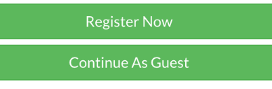
To register, fill out the required information and tap the "Register" button.
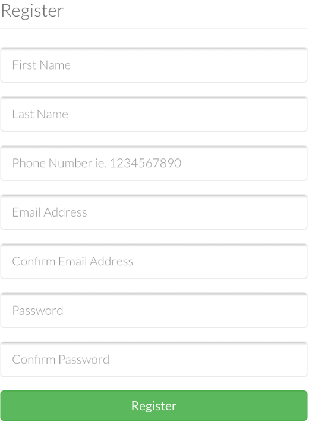
After you have registered, you will be prompted to "Login".
To login, fill out the email address and password you used to register, then tap the "Login" button.
By checking the "Remember Me" box, you will not be prompted to login when opening the app.
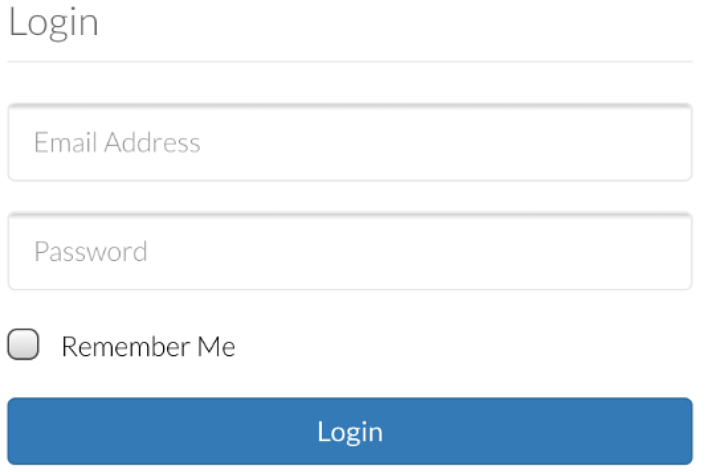
To reset your password, tap the "Reset Password" button on the Login page.
Once tapped, enter your registered email address. You will receive an email with a new password.
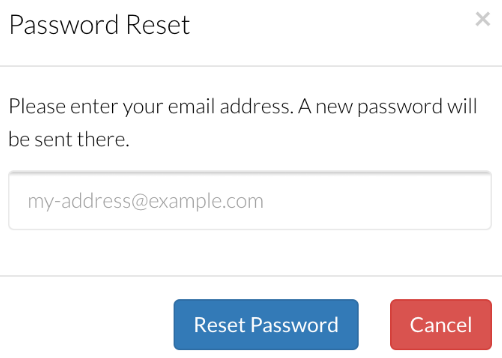
To navigate the app, use the icon in the upper right corner. Once tapped, a menu will drop down with a list of screens to visit.
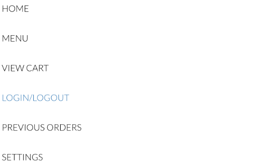
To view your settings, tap the navigation icon, then choose "Settings". From this screen you can change your password and/or personal information.
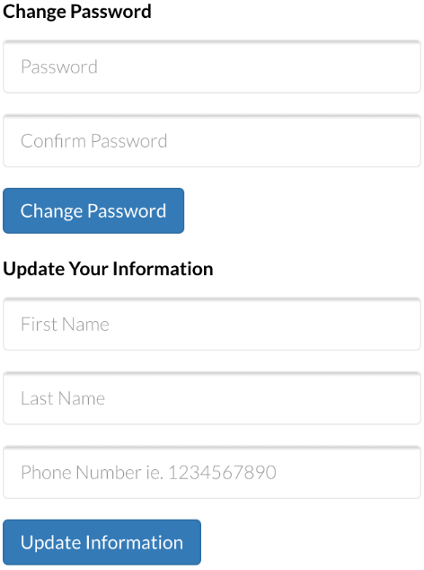
The "Home" screen has general restaurant and ordering information. By tapping "Order Online" you can proceed to the menu and begin your order. Also, there is the option to quickly retrieve saved orders by tapping on "Previous Orders".
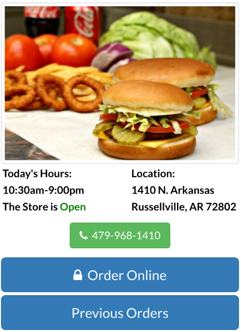
You can view the menu by tapping the "Order Online" button from the "Home" screen, or you can use the navigation icon and select "Menu". Once the menu is open, you can choose and expand the category of food by tapping it.
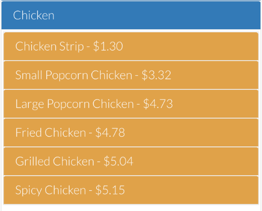
By tapping the desired item, you can choose which condiments you want with your item. If the item is a "combo" meal, you will be able to select the appropriate meal options.
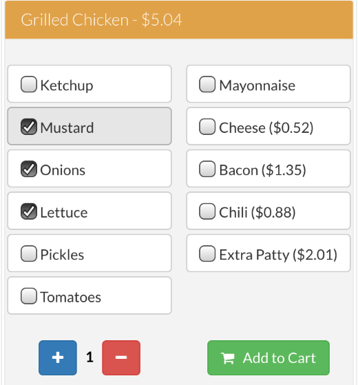
Once you have added all the condiments or meal options for your item, you can adjust the quantity by tapping the "+" and "-" buttons. When you have the desired quantity, tap the "Add To Cart" button.
You can view the details of your order by tapping the cart icon in the upper left corner. This screen contains your order total, allows you to remove items, and update quantities. You may also add special notes to your order.
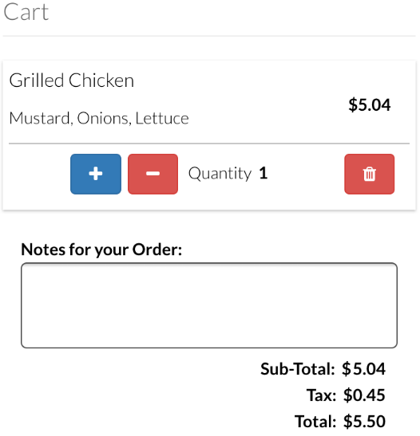
From the "View Cart" screen, choose the "Checkout" button. Next, select from the following options: "Dine In", Pick Up" or "Delivery" (subject to restaurant availability) and then review your order.
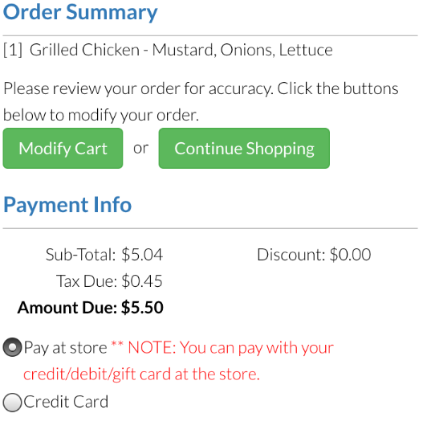
Verify your listed contact information is correct. Give your order a name if you would like it to be listed on the “Previous Orders” screen. If your order is correct, tap "Place Secure Order" button and wait for the confirmation screen to appear.
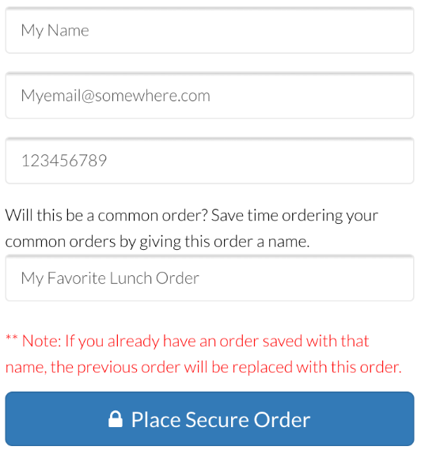
You are now ready to browse the menu and order online. If you have any questions, you can contact J&K Media Solutions at "support@jandkmediasolutions.com".
You can view this tutorial again by tapping the "Tutorial" button from the "Home" screen. Tap the "Start Ordering" button below to continue.
Start Ordering